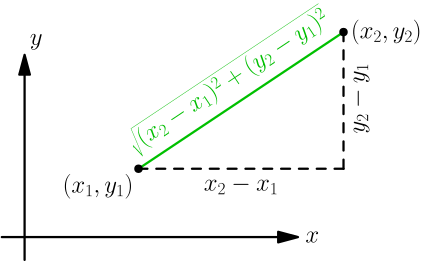
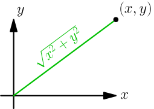
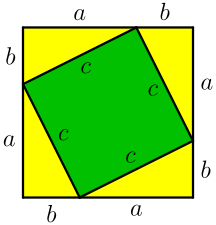
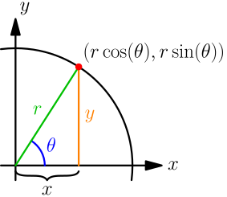
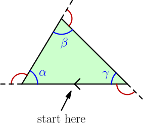
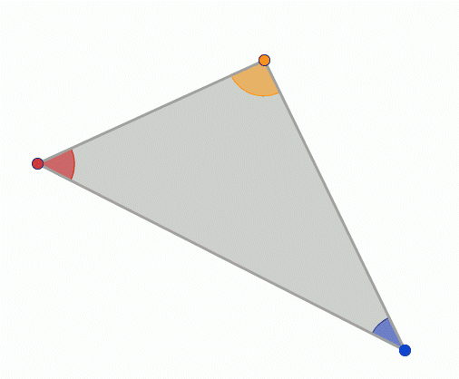
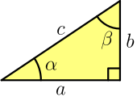
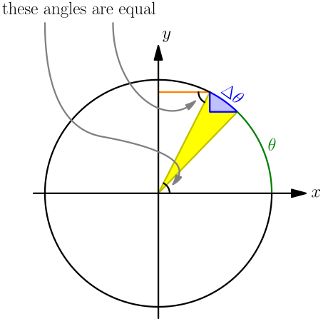
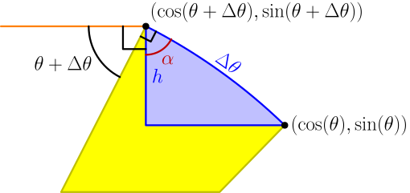
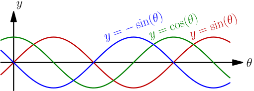

More Geometry and Trig¶
In the geometry and trig chapter we learned stuff that are very useful for writing games, and I have used something from that chapter in almost all 2D games I have made. In this chapter you'll learn things that are sometimes useful.
This chapter assumes that you have read the first geometry and trig chapter.
Pythagorean Theorem¶
Let's say that we have a triangle with a quarter-turn corner, and its sides are $a$, $b$ and $c$ where $c$ is the longest side. In the picture at right, the small square at the bottom-right corner means that we're talking about a quarter-turn corner. This works with any triangle that has a quarter-turn corner:
$$\begin{align}a^2 + b^2 = c^2\end{align}$$We'll prove this soon. Note that $c$ must be the longest side of the triangle.
The Pythagorean theorem has many important applications:
- The hypotenuse of a triangle can be calculated by square rooting both sides of the above equation. Hypotenuse is a fancy word that means the longest side of a quarter-turn triangle.
The last step assumes $c \ge 0$, but that's not a problem because a
triangle with a negative side length doesn't make much sense. Many
programming languages have a hypot() function that works like this:
It's also possible to solve for other sides, e.g. $b = \sqrt{c^2 - a^2}$.
- Using the hypot thing, we can calculate the distance of two points $(x_1,y_1)$ and $(x_2,y_2)$ like this:

It doesn't matter which point is which:
$$\begin{align}\sqrt{(x_2-x_1)^2 + (y_2-y_1)^2} &= \sqrt{\bigl(-(x_1-x_2)\bigr)^2 + \bigl(-(y_1-y_2)\bigr)^2} \\ &= \sqrt{(x_1-x_2)^2 + (y_1-y_2)^2}\end{align}$$Here I used the $a-b=-(b-a)$ and $(-x)^2=x^2$ formulas from the basics page.
- The formula simplifies nicely if one of the points is $(0,0)$:

This also works if $x$ or $y$ is negative or if they are both negative; the negativeness doesn't matter because $(-x)^2 = x^2$ with any $x$.
Pythagorean Theorem Proof¶
Now we have looked into a bunch of ways to use the Pythagorean theorem, but let's prove that it actually works. This is a well-known proof, and I like it because it's simple.
Let's start by arranging 4 abc triangles like this:

Handy thing: $(a+b)^2=a^2+2ab+b^2$
Proof using $(a+b)c=ac+bc$:
$$\begin{align}& \ (a+b)^2 \\ =&\ (a+b)(a+b) \\ =&\ a(a+b)+b(a+b) \\ =&\ aa+ab+ba+bb \\ =&\ a^2+2ab+b^2\end{align}$$We can calculate the total area of the above square in a couple different ways using some basic area stuff:
- The square's sides are each $a+b$, so the area must be $(a+b)(a+b)$.
- The square consists of the green square whose area is $c^2$ and 4 yellow triangles with area $\frac{ab}{2}$ each. Total area is $c^2 + 4 \frac{ab}{2}$.
We must get the same area with both ways, so we get this:
$$\begin{align}(a+b)(a+b) &= c^2 + 4\frac{ab}{2} \\ (a+b)^2 &= c^2 + \frac{4}{2} ab \\ a^2 \rcancel{+ 2ab} + b^2 &= c^2 \rcancel{+ 2ab} \\ a^2 + b^2 &= c^2\end{align}$$Exercise
Draw an $a+b$ by $a+b$ square, and use areas to derive the handy thing we used above.

Cartesian to Polar Coordinates¶
We know that every point on the xy plane can be represented with $(x,y)$ coordinates, but we can also represent every point with a distance from $(0,0)$ and an angle:
$$\begin{align}\left\{\begin{array}{l} x = r\cos(\theta) \\ y = r\sin(\theta) \\ \end{array}\right.\end{align}$$Fancy words that make you sound like a mathematician: the $(x,y)$ form is known as Cartesian coordinates, and the $(r,\theta)$ form is called polar coordinates.
If we know $r$ and $\theta$, finding $x$ and $y$ is simple as plugging them in to the equations above. But how about figuring out $r$ and $\theta$ from $x$ and $y$? We can use Pythagorean theorem to figure out $r$:
$$\begin{align}r = \text{hypot}(x, y) = \sqrt{x^2+y^2}\end{align}$$Rewriting $\theta$ in terms of $x$ and $y$ so that all corner cases are covered is a bit more complicated, so programmers defined a function just for that:
$$\begin{align}\theta = \text{atan2}(y,x)\end{align}$$Note that $y$ goes before $x$; getting this mixed up gives wrong angles.
The atan2 function was originally a thing in programming languages only, but nowadays at least some non-programming-related math articles on Wikipedia use it as well. The 2 at the end of atan2 means that it takes two arguments unlike atan, and the next section explains what atan is:
Triangle Trig¶
The word "trigonometry" means triangle something, and trig functions like $\sin$ and $\cos$ can be also defined in a triangle with a quarter-turn corner. We can get those definitions from our circle stuff by drawing a triangle under the red $(x,y)$ point like in the image at right.
Something interesting happens:
$$\begin{align}\frac x r = \frac{r\cos(\theta)}{r} = \cos(\theta) \\ \frac y r = \frac{r\sin(\theta)}{r} = \sin(\theta)\end{align}$$More fancy words: if we have a triangle with a quarter-turn corner, the opposite side of a corner means the side opposite of that corner, and the adjacent side means the side that is not opposite or the hypotenuse.

Now we are ready to define $\sin$ and $\cos$ with nothing but a quarter-turn-cornered triangle. We'll also define a third function called $\tan$ that we haven't used before.
$$\begin{align}\sin(\theta) &= \frac{\text{opposite}}{\text{hypotenuse}} \\ \cos(\theta) &= \frac{\text{adjacent}}{\text{hypotenuse}} \\ \tan(\theta) &= \frac{\text{opposite}}{\text{adjacent}}\end{align}$$Note that this stuff only makes sense for $0 < \theta < \frac \tau 4$; otherwise we'd need to think about triangles with negative side lengths, and circles in xy plane are a much handier way to handle that.
If we apply the $\tan$ definition to our circle pic above, we get this:
$$\begin{align}\tan(\theta) &= \frac y x \\ \theta &= \arctan\left(\frac y x\right)\end{align}$$
Here $\arctan$ means the inverse of $\tan$, and most programming languages have
an atan function that computes arctan. However, earlier we did
$\theta = \text{atan2}(y,x)$. Here are some things that can go wrong with
$\arctan(\frac y x)$:
- If $x=0$, $\frac y x$ is not defined.
- If $x<0$, the result is off by half turn. For example, setting $(x,y)=(-2,-2)$ gives $\arctan(\frac{-2}{-2}) = \arctan(1) = \arctan(\frac 2 2)$, which is the same answer as the one for $(x,y)=(2,2)$, even though the angles were supposed to differ by $\frac \tau 2$ (see picture at right).
Here's our conclusion: atan2 is good because it handles corner cases. However, you can use plain atan if you know that the angle is between $-\frac \tau 4$ and $\frac \tau 4$; this corresponds to $x > 0$ in Cartesian to polar conversion.
Exercise
Use triangle trig to prove that $\tan(\theta)=\frac{\sin(\theta)}{\cos(\theta)}$.
Triangle Angle Sum¶
This section uses the Greek alpha, beta and gamma letters $\alpha$, $\beta$ and $\gamma$ to represent angles. Don't get confused – they are just letters, like a, b, c or $\theta$.

In the above picture, every red angle is a half turn minus blue angle, and we know that half turn is $\tau/2$ radians. Let's start at the little arrow at bottom and move along the edges clockwise until we arrive at the arrow again. The red angles represent how much we need to turn at each corner, and those turns are $\frac\tau2-a$, $\frac\tau2-b$ and $\frac\tau2-c$.
But in total we turned a full turn or $\tau$ radians:
$$\begin{align}\tau &= \left(\frac\tau2-\alpha\right) + \left(\frac\tau2-\beta\right) + \left(\frac\tau2-\gamma\right) \\ &= \frac\tau2 - \alpha + \frac\tau2 - \beta + \frac\tau2 - \gamma \\ &= 3\frac\tau2 -\alpha-\beta-\gamma \\ \alpha+\beta+\gamma &= \frac 3 2 \tau - \tau = \frac \tau 2\end{align}$$So if we add together all the angles of a triangle we get a half turn. This works with any triangle. We'll find this useful later.
The animation comes from here.
Why is cosine called cosine?¶
Let's have a look at the triangle at right. We know that it's a triangle, so the sum of the angles must be $\frac \tau 2$.
$$\begin{align}\alpha + \beta + \frac \tau 4 &= \frac \tau 2 \\ \beta &= \frac \tau 2 - \frac \tau 4 - \alpha = \frac \tau 4 - \alpha\end{align}$$We also know these things:
$$\begin{align}\cos(\alpha) &= \frac a c \\ \sin(\beta) &= \frac a c\end{align}$$Setting these equal and plugging in $\beta=\frac\tau4-\alpha$ gives this:
$$\begin{align}\cos(\alpha) &= \sin\left(\frac \tau 4 - \alpha\right)\end{align}$$Only angles between $0$ and $\frac \tau 4$ make sense as triangle corners, but this actually works with any $\alpha$.
The angle $\frac\tau4-\alpha$ is also known as the complement angle because when added together, the angles "complete" to $\frac\tau4$:
$$\begin{align}\left( \frac \tau 4 - \alpha \right) + \alpha = \frac \tau 4\end{align}$$Actually "cos" is short for "complement sine" as it's just the sine of the complement.
Rest of this chapter assumes that you know derivatives.
Derivative of Sine¶
Let's draw an angle $\theta$ in the unit circle. We'll assume that $\theta$ is in radians, so it's an arc length on the unit circle.

Here the black ∢ signs mean an angle. It looks a lot like a circle arc, but in this case we are only interested in the angles, not circle arcs with radius 1.
Anyway, the orange line is parallel with the $x$ axis, and that's why we have two equal angles like the arrows in the picture show. But we know that the lower angle is simply $\theta + \Delta\theta$, so the upper angle is also $\theta + \Delta\theta$.
Let's zoom on the blue area. A lot of things are going on there.

This is a mess, but let's try to make sense of this.
The $h$ is just the difference of the $y$ coordinates:
$$\begin{align}h = \sin(\theta+\Delta\theta)-\sin(\theta)\end{align}$$We can figure out the angle mess by rotating from the orange line all the way to the blue $\Delta\theta$ line. We can do that in a couple different ways: we can do $\theta+\Delta\theta+\frac \tau 4$ where $\frac \tau 4$ is the tiny corner square, or we can do $\frac \tau 4 + \alpha$ where $\frac \tau 4$ is the bigger square. Let's set those equal:
$$\begin{align}\theta + \Delta\theta \rcancel{+ \frac \tau 4} &= \rcancel{\frac \tau 4} + \alpha \\ \theta + \Delta\theta &= \alpha\end{align}$$The blue area looks kind of like a triangle, so we can apply triangle trig to it, but it's not a perfect triangle so we'll use $\approx$ instead of $=$.
$$\begin{align}\cos(\alpha) &\approx \frac{\text{adjacent}}{\text{hypotenuse}} \\ \cos(\alpha) &\approx \frac{h}{\Delta\theta} \\ \cos(\theta+\Delta\theta) &\approx \frac{\sin(\theta+\Delta\theta)-\sin(\theta)}{\Delta\theta}\end{align}$$This looks kind of like a definition of derivative already! The above picture seems to be quite precise, and if we make $\Delta\theta$ even smaller, the errors go away:
$$\begin{align}\lim_{\Delta\theta\to0}\cos(\theta+\Delta\theta) &= \lim_{\Delta\theta\to0}\frac{\sin(\theta+\Delta\theta)-\sin(\theta)}{\Delta\theta} \\ \cos(\theta) &= \frac{d}{d\theta}\sin(\theta)\end{align}$$This proof is based on a picture that makes sense only for $0 < \theta < \frac \tau 4$, but the same derivative rule works with any $\theta$. Note that $\theta$ must be in radians.
Derivative of Cosine¶
Now we know that $\frac{d}{d\theta} \sin(\theta) = \cos(\theta)$ and $\cos(\theta) = \sin(\tau/4 - \theta)$, so this will be really easy. We just need to remember the chain rule.
$$\begin{align}\frac{d}{d\theta} \cos(\theta) &= \frac{d}{d\theta}\sin\Bigl(\underbrace{\frac\tau4 - \theta}_{\text{inner stuff}}\Bigr) \\ &= \cos\Bigl(\frac\tau4 - \theta\Bigr) \cdot \frac{d}{d\theta}\Bigl(\frac\tau4 - \theta\Bigr) \\ &= \sin\biggl(\frac\tau4 - \Bigl(\frac\tau4 - \theta\Bigr)\biggr) \cdot (0-1) \\ &= \sin\Bigl(\rcancel{\frac\tau4} \rcancel{- \frac\tau4} + \theta\Bigr) \cdot (-1) \\ &= -\sin(\theta)\end{align}$$Let's check the result with graphs:

We know that $\frac{d}{d\theta} \sin(\theta) = \cos(\theta)$, so finding the derivative moves the graph left. Similarly, the $-\sin(\theta)$ graph is the $\cos(\theta)$ graph shifted left.